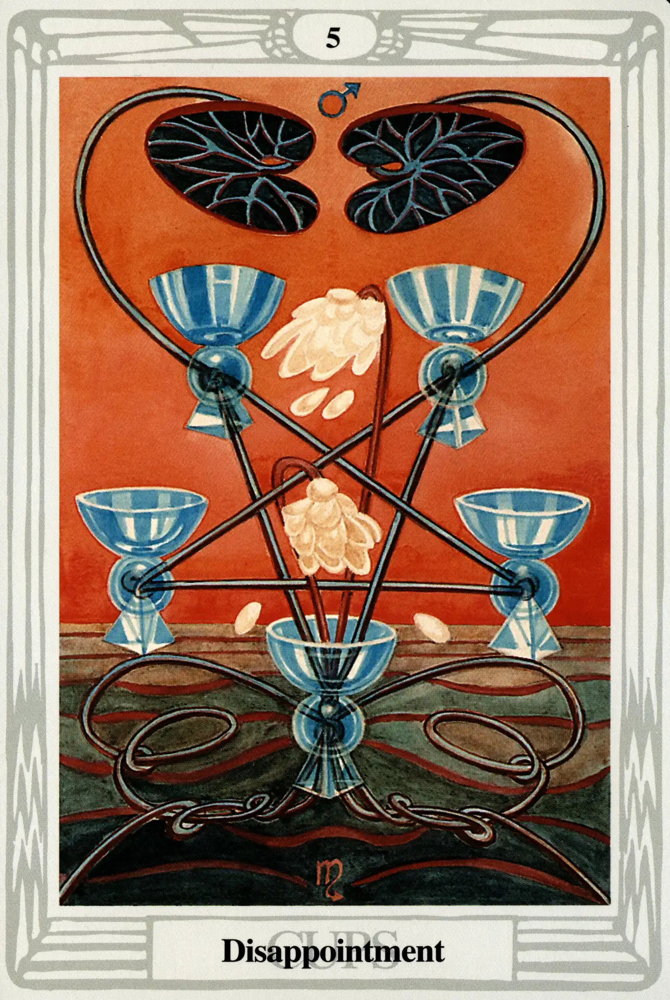

Cups
Five of Cups
Disappointment

(Mars in Scorpio)
0° to 10° Scorpio
October 23 to November 1
Original Title: Lord of Loss in Pleasure.
Golden Dawn Model: A hand appears from clouds at the bottom of the card holding lotuses or water lilies. Flowers fall right and left and overhang five cups arranged as a square with one in the center. The lotus stem ascends between the cups as a fountain. No water comes from the flowers. All the cups are empty.
Queen Scale for Geburah: Scarlet Red.
The Four Scales for Mars: Scarlet; Red; Venetian Red; Bright Red, rayed Azure or Emerald.
The Four Scales for Scorpio: Green Blue; Dull Brown; Very dark Brown; Livid Indigo Brown.
Formula: 5 (Geburah) of Cups (Briah) + Mars in Scorpio = DISAPPOINTMENT
With this card, the suit of Cups takes a dramatic and sinister turn. This is very disappointing, because the Five of Cups had so much going for it. Discarding the configuration of the Golden Dawn model that displays five empty cups arranged as a square with one cup in the center, Crowley has Harris arrange her cups as an inverted pentagram, symbol (in this place) of the triumph of matter over spirit.
What is it that turns this card sour? Mars rules Scorpio and is very happy to be there. Not only that: all this is in Geburah, the hometown, the sphere of Mars. So where's the problem?
The problem stems from the fact that Mars is too happy to be here. He gets himself too excited to indulge in foreplay. This makes Scorpio nervous. He ends up prematurely blowing such a fiery blast upon the relationship that it retards what might have otherwise been the slow processes of passionate decay that Scorpio uses to devour and liberate her lovers. Who among us cannot understand this?
Water no longer pours into the cups; the lotus blossoms have been completely blown away by the hot martial wind that has turned the sky red. The sea is now a stagnating pool. Now we can see where the earlier small cards in this suit were taking us. Love leads to Abundance, which (left uncontrolled) leads to Luxury, which (left uncontrolled) leads to decadence, boredom, frustration and—Disappointment.